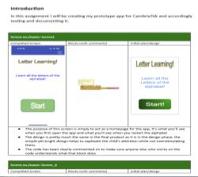

 Click image to go to evidence page.
In Unit 8 I had to design and create a Mobile app that would be used to teach children how to say and write the letters of the alphabet. The app prompt was fairly simple and i was able to find/create the assets fairly easily, though per usual i didn't enjoy the written work as much as the coding.
This was my second favourite units and I really enjoyed designing and coding the app, finding the assets required was a bit of a hassle but wasn't too hard and im delighted to say i enjoyed the unit.